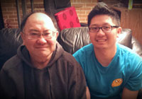
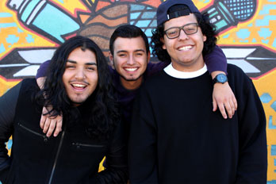
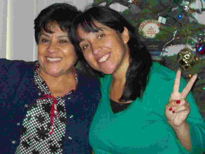
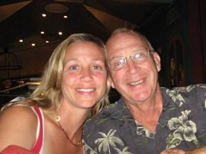
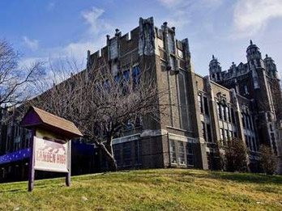
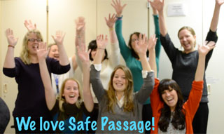
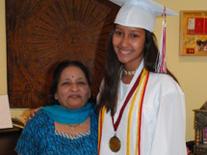
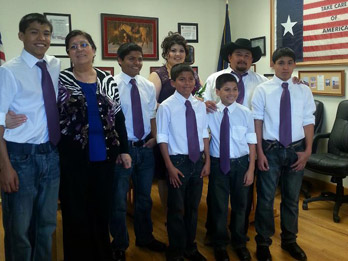

-
National
Casey Chow
- California
- Donaldina Cameron House
I would like to thank my father. This spoken word is for him, taken from a poem I wrote for him in 2012. Yet, I have not given nor read this poem to him... It's funny that I'd share it with the world before I would him. This man taught me how to love and respect the people around me... that's something that's life.
 -
Northwest
Jose Esquivel, Manuel Floriano, and Anthony Martinez
- California
- RYSE Youth Center
We would like to thank all our peers, RYSE Youth Center, and the greater community of Richmond, California. Without them this project wouldn't have happened.
 -

Southwest
Angelica Merlos
- Hawaii
- Friendship Christian Schools
I would like to thank my mother for teaching me how to respect others. As a child, whenever I would make a rude or critical comment about an individual or group, she would quickly correct me and remind me the importance of loving others and being kind even if you don't agree. I never heard her say any negative comments or jokes about other races and religions. Not to say she never had any, but as a good parent she didn't say them around me or my brothers. She was a single parent and worked 80 hours a week to support us. She took responsibility and put herself last in order to supply our needs and even our wants. She demonstrated to me that loving others is the best way to show respect and working is the best way to have self respect.
-

Northeast
Karin Raye
- Massachussetts
- Lasell College
My father taught me the importance and value of respect. As a child raised on a farm, I earned and gave respect based upon hard work, perseverance and how you treated others. Respect was gained from what you did and how you acted, not who you were. My dad taught me to respect myself, my gender and my strengths and in turn, others would too. Now, as a professor teaching domestic violence advocacy, my male and female students all learn to respect the power and value of each other's voices and to see the critical importance of a collective effort to combat dating violence. Respect is the foundation of this movement to improve each other's lives.
-
Mid-Atlantic
Roslyn Daniel
- New Jersey
- Camden High School
I would like to thank the quiet teachers of Camden High School in Camden, NJ, who under the fearless and exacting leadership of Riletta Cream, taught inner-city kids that there were dreams to be had if we were willing to honor ourselves and our gifts. They taught us that respect starts within. I can give you no more than I willingly and generously sow into myself. Respect was the standard in our school. If you truly respected yourself, we learned, then honor our teachers, parents and community by living up to our limitless potential. Thank goodness for the dignity,respect and love we students received in the hallowed halls of "The Castle on the Hill" from our beloved educators.
-
Midwest
Samantha Santen
- Indiana
- Safe Passage, Inc.
I would like to thank Safe Passage, Inc. for teaching me the meaning of respect. Safe Passage is a domestic violence agency in Batesville, Indiana that has served over 4,000 victims of domestic violence since its opening 16 years ago. As an employee of the organization, I have observed how many clients have learned to respect through the agency's intervention and prevention services. After interviewing various individuals who have been through violent situations, I have concluded that in order to respect anyone else, one must respect him or herself.
 -

Southeast
Nayna Shah
- Florida
- DoSomething.org
I used to get confused when I was in Kindergarten, because all the other students in my class would use a different colored crayon from mine when drawing self-portraits. I asked my grandmother why this was. Her response was simple: the world is made of people who look different. There are people who use a light crayon to draw a self-portrait, there are people who use a darker crayon, like you and there are a million other colors in between. It's important that we respect all the different colored crayons that people use, because those colors make us special. But you always have to remember that regardless of what color you use for your self-portrait, we still all have red blood in our veins. And that's the only color that really matters.
My grandmother's words have stuck with me since then. Growing up, I have seen the negative effects of bullying and violence in schools, and at the root of the issue is always the fact that one person is different from another. Because of my grandmother, I respect, appreciate, accept and even celebrate the differences between the people around me. Without these differences, we would not be able to progress and learn together as a society. However, I never become too preoccupied in physical differences, because I know that underneath them flows the same red blood, and we deserve respect just for that.
-
North

Karen Smyte
- Michigan
- Children's Literacy Network
I wish I could thank a first-grade teacher, somewhere in Michigan. Detroit? Marquette? I don't know her name, never will, but I thank her often. I volunteer at my state's sole female prison, the Women's Huron Valley Correctional Facility in Ypsilanti, Michigan, record incarcerated mothers and grandmothers reading bedtime stories to the children and grandchildren they haven't seen for months, sometimes years. Our organization, Children's Literacy Network, then mails the books and recordings to the children. It's a popular program with a waitlist almost one year long.
Several weeks ago, one of the moms we recorded earlier this year stopped by to thank us, again. The women thank us repeatedly for the work — the guards, too. This mother told us that her son had brought his recording to school. "This is my mom," he told his teacher, holding up the CD, along with his book. "This is my mom." His mother has been in prison for years so his friends haven't met her, nor have any of his teachers.
"Well," this first grade teacher said, "let's meet your mom." She played the CD for his entire class, twice.
So thank you, Michigan first-grade teacher, whoever you are, wherever you live. I don't know your teaching style or any of the data the state will use to evaluate your performance, but I do know your generosity and respect of that boy and his mother helped make him feel proud and a roomful of prisoners, along with the volunteers, cry for joy.
-

South
Nina Mendez
- Texas
- Centerville Junior/Senior High School
I would like to thank my sons for teaching me among other important things, respect: for them, for myself and for others. It is because of my 5 sons, that I want to be a better person, a better mom and a better human being.
As a mom of five boys, ages 12-17, life has been anything but easy. Having gone through a separation, divorce, losing them for over a year, being raped, and the tumultuous teenage years has not made it any easier. But throughout the ups and downs that life has to offer, our love for each other, has given me strength. Had it not been for them, I might not have stood up for myself and made sure my rapist was convicted. I might not have respected myself enough to chose a new loving and respectful spouse. They taught me to respect myself.
I often wondered why God didn't give me girls, but now I know it was to make sure that I gave the world 5 responsible, loving and respectful young men. Everyday, I strive to teach them to not only respect themselves and others, but especially every female they encounter; to know that 'no means no!', that a woman is just as powerful and capable as a man, and most importantly, that every woman they encounter, should be treated with the same love and respect as they would want me to be treated with. With God's help, they will be not only good husbands and fathers, but respectful human beings. And my job on earth, will be done. Thank you Haiden, Rosendo, Cristian, Jason, and Kevin for teaching me what unconditional love is for forgiving my parental mistakes, for knowing your are my heart and showing me what true respect it. I love you.
- The Respect Challenge
- Macy's - Founding National Partner
- an initiative of Futures Without Violence